第一章：战略变阵与关键决策

第二章：产品战略与生态整合

第三章：AI时代的思考与危机感
2025年春节前夕，腾讯在人工智能战略上做了两个极为关键的决策：元宝从TEG划归CSIG，并接入DeepSeek满血版。这是一场集全集团的、继移动互联网后的关键战役。


2024年12月底，腾讯高级执行副总裁汤道生在休假期间主动请缨，建议由CSIG接手元宝产品。2025年春节前，腾讯做出两个重大决策：
"这是集全集团的、继移动互联网后，一场非常关键的战役。就像当年Pony说要拿到移动互联网的船票——我们也希望拿到AI时代的船票。"